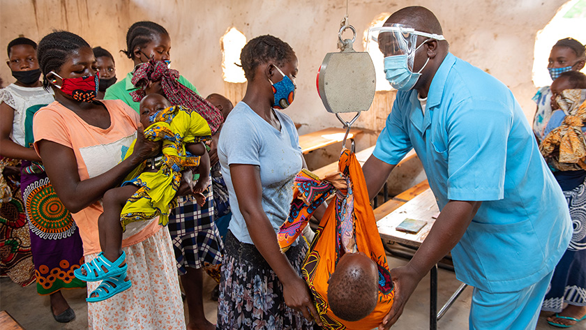

Hello, I'm
Barkot Tamiru D.
Health & Nutrition Officer
The best way to find yourself is to lose yourself in the service of others.
- Mahatma Gandhi
Scroll Down
My Intro
About Me
Experience
8 Years Working
Completed
28+ Projects
Support
Online 24/7
Passionate public health professional with global expertise. Successful in NGOs, government, and research. Skilled in program design, community engagement, project management, and leadership. Committed to impactful humanitarian interventions and organizational goals.
Contact Me
Academics
Educational Background
Dec, 2023 - Present
JL MCF Fellow Entrepreneurship Leadership Development - Queens University
Total Number of Modules Covered - 3 | Program's Total Number of Modules - 8
Sept, 2020 - Jul, 2022
Master of Public Health with specialization in Health System Management - Zemen Post-Graduate College
Total Number of Courses - 12 | CGPA - 3.89
Graduated with Great Distinction
Dissertation
Sep, 2019 - Jul, 2021
Master of Arts Project Management - Zemen Post-Graduate College
Total Number of Courses - 14 | CGPA - 3.78
Graduated with Great Distinction
Dissertation
Sep, 2012 - Jul, 2016
Bachelor of Science in Public Health - Hawassa University
Total Number of Courses - 47 | CGPA - 3.45
Graduated with Distinction
Dissertation
My abilities
Area of Expertise
Program Offcer
Program Development
Advanced
Project Management
Advanced
Leadership Skills
Advanced
Relationship Building
Intermediate
Technical Consultant
Health Advocacy & Dialogue
Intermediate
Capacity Building
Advanced
Proposal Design & Development
Intermediate
Donor Reporting
Intermediate
Work Experiences
Experiences
Health & Nutrition
Officer
See more
Health & Nutrition Officer
@ Food for the Hungry International (FHI) [March, 2020 - Present]
-
Successfully led the implementation of the FHI RFSA-PReSERVE integrated activities
-
Directed nutrition, SBC, health systems strengthening, FSL, and mental health improvement projects
-
Improved the food security of vulnerable households in targeted PSNP communities in Amhara Region.
-
Contributed to other strategic assignments and managing a multi-thousand-dollar FHI health and nutrition program portfolio
implemented.
-
Remarkable contribution to emergency health and nutrition response projects development initiatives.
-
Established a strong monitoring and evaluation system and set standards for project implementation
Community Health
Facilitator
See more
COMMUNITY HEALTH FACILITATOR
@ LOVE IN ACTION ETHIOPIA NGO (LIAE) [June, 2018- October, 2018]
-
Designed local reporting procedures for high-risk adolescents within the organization and project beneficiaries
-
Produced IEC materials to support the overarching behaviour change for vulnerable communities, and incorporated them in project activities to use through peer education sessions and outreach HTS programs
-
Strengthen the provision of direct clinical services in targeted towns in collaboration with PSI and establish referral linkage for HTC and STI services through a voucher system
-
Ensured the proper expenditure and timely utilization of the budget allocated for the MULU KP/PP projects and prepared periodic work plans and reports, overseeing the project's implementation
-
Created and strengthened networking with other organizations to ensure referral linkage for ongoing support and well-being of beneficiaries.
Program
Coordinator
See more
PROGRAM COORDINATOR
@ The Leprosy Mission Internation [October, 2021 - July, 2023]
-
Coordinated and participated in the development of proposals and concept notes.
-
Facilitated research studies, developed protocol, data management, and analysis of the Leprosy survey including baseline and end-line surveys, and prepared summary reports
-
Develop and implement leprosy and healthcare programs in alignment with the organization's mission and objectives
-
Provide guidance and mentorship to team members and healthcare workers to enhance their knowledge and skills
-
Actively participated in strategic planning, leveraging M&E data and insights to set program goals, objectives, and targets that were measurable, achievable, and aligned with organizational priorities
WASH
Facilitator
See more
WASH FACILITATOR
@ FH Ethiopia [February, 2019 - March, 2020]
-
Produced educational resource materials on sanitation and hygiene, and Baby WASH, and monitored the implementation of the program policy regularly.
-
Oversaw the implementation of WASH projects, ensuring that they are carried out effectively, efficiently, and in line with the organization's objectives and standards
-
Providing technical guidance on water supply, sanitation, and hygiene promotion, which may include the design and construction of water systems, and sanitation facilities, and promoting safe hygiene practices.
-
Facilitated the development and adaptation of nutrition education training manuals and facilitator’s guide
based on existing national nutrition protocols and curricula including training follow-up.
-
Responsible for conducting survey designs, feasibility studies, site selections, and documentation of Water, Sanitation, and other Infrastructures of the HUB program
-
Provided training and building the capacity of local staff and community members to ensure the sustainability of WASH
My Services
What I Have Been Offering
Field Supervisior or Team Leader
See more
FIELD SUPERVISOR/ TEAM LEADER
@ BDS CENTER FOR DEVELOPMENT RESEARCH INSTITUTE [November, 2018 - January, 2019]
-
Managed research tools, protocols for data quality checks, back check tools, and troubleshoot encountered filed issues
-
Led successfully the field staff to establish ethical protocols during the interviews and recommended improvements and modifications.
-
Participated in community mobilization activities, including district launches and public gatherings.
-
Provided implementation and monitoring support in the planning and implementation of the THIS in the regions
-
Oversaw the SLM survey work and offered input and expertise
-
Ensured the study was completed according to plan schedules, policy, and standards
-
Monitored and assessed the quality of the work of the team, and review the questionnaires for completeness, consistency, and accuracy
Technical
Consultant
See more
Technical Consultant
@ BDS CENTER FOR DEVELOPMENT RESEARCH INSTITUTE
[Nov, 2018- Jan, 2019]
-
Designed and rolled out, at all levels, project-specific management tools including reporting templates, progress monitoring tools.
-
Designed work plans to improve project workflow accountability
-
Served as adviser for TRI’s health programs on strengthening community health and public health programs.
-
Managed a budget of $2 million drove the organization’s support for the health sector beyond 2023.
-
Planned and delivered direct technical support to program design, management, and implementation.
-
Design and mockups of products for companies.
Other Work
Experiences
See more
Other Work Experiences
-
OPD Nurse
@ T.dur Health Center [September, 2016 – May, 2017]
My Portfolio
Recent Works
All
Health
Food Security
Program Design
Care Group Program Design
Demo

Community Health
Demo

Global Food Security
Demo
My clients say
Testimonials
Gelawdios Terefe
Senior Officer, International Assistance at Global Affairs Canada | Affaires mondiales Canada
"I had the privilege of managing Barkot Tamiru, who excelled in fostering global collaboration and facilitating aid initiatives.
His exceptional leadership and diplomatic skills were evident in navigating complex international landscapes. "
Beletshachew Tadesse
Country Director at Leprosy Mission International
"Working alongside Barkot as a Country Director was truly enriching. His dynamic leadership and strategic vision significantly impacted our operations.
He demonstrated exceptional skills in navigating complex challenges and fostering positive change."
Yosef Masresha
Senior Humanitarian Learning Design & Management at Care International
"Collaborating with Barkot Tamiru as a Planning, Monitoring, and Evaluation Coordinator was an honor.
His meticulous planning and strategic evaluation skills significantly enhanced project outcomes. "